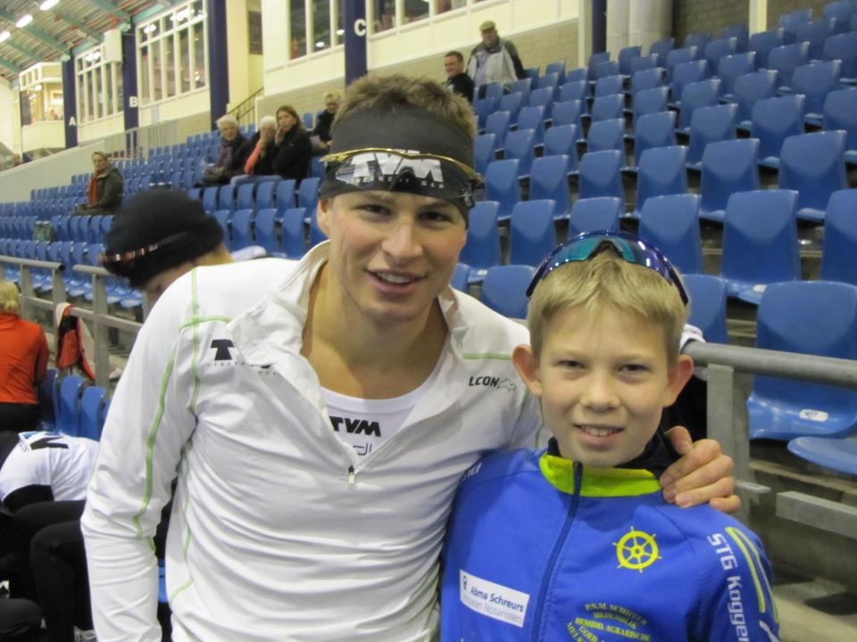

Berend Bervoets
Berend Bervoets is 15 jaar oud en schaatst bij STG-Koggeland, en zal in het seizoen 2014-2015 schaatsen bij de Baanselectie Hoorn.
Over Berend
Berend
Ik ben Berend Bervoets, ik ben 15 jaar oud en ik woon in Hoorn. Ik ben begonnen met schaatsen toen ik 6 jaar oud was. Ik deed toen aan jeugdschaatsen op de zaterdag morgen. 2 jaar hierna ben ik begonnen met wedstrijdschaatsen bij STG-Hoorn. Na 1 jaar heb ik besloten naar STG-Koggeland te verhuizen. Daar heb ik 3 jaar met veel plezier geschaatst. Toen ik als pupil A mijn selectie punten reed, ben ik naar
Baanselectie Hoorn
Aankomend seizoen schaats ik bij de Baanselectie Hoorn. De Baanselectie is een selectie voor Junioren vanaf B en is gericht op Langebaanschaatsen. De baanselectie is uitsluitend voor rijders van de ijsfaciliteiten groep en is aangesloten bij de KNSB. Dit betekent dat wij op alle selectie-uren mogen schaatsen binnen het gewest Noord-Holland Utrecht. In de winter schaatsen wij daarom ook samen met de Baanselectie Alkmaar, en woensdag trainen wij ook daar.
PR'S
- 100M : 11.85
- 300M : 28.20
- 500M : 41.95
- 700M : 1:15.34
- 1000M : 1:24.46
- 1500M : 2:06.36
- 3000M : 4:25.82
Nieuws
Sponsors
Schaatsen op hoog niveau is niet mogelijk zonder sponsors. Dit zijn mijn sponsors voor het seizoen 2014-2015.Kruiden Massages
Natuurlijk, ontspannende (sport) Massages!
Tweewielercenter Leo Smit
Tweewielercentrum Leo Smit Medemblik, doet uw fiets goed!
Administratiekantoor Bervoets
Voor boekhouding, bedrijfsadvisering, fiscale aangiften en loonadministratie!
WezenbeekApps
Voor Apps en Websites als deze!
Donateurs
- Ruben van Wezenbeek
- Moniek Bervoets
- Donateur 3
- Donateur 4
- Donateur 5
- Donateur 6
- Donateur 7
- Donateur 8
- Donateur 9
- Donateur 10
- Donateur 11
- Donateur 12
- Donateur 13
- Donateur 14
- Donateur 15
- Donateur 16
- Donateur 17
- Donateur 18
- Donateur 19
- Donateur 20
- Donateur 21
- Donateur 22
- Donateur 23
- Donateur 24
- Donateur 25
- Donateur 26
- Donateur 27
- Donateur 28
- Donateur 29
- Donateur 30
Contact
Twijfel niet om mij te mailen.